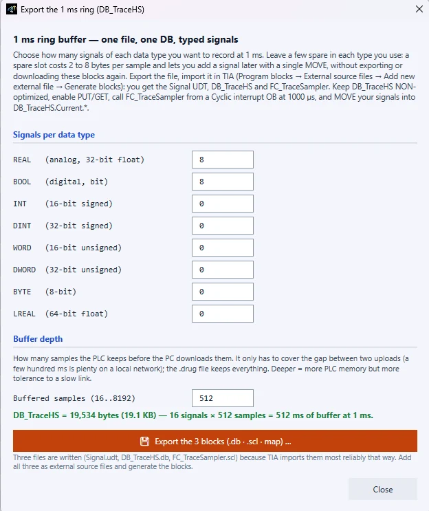
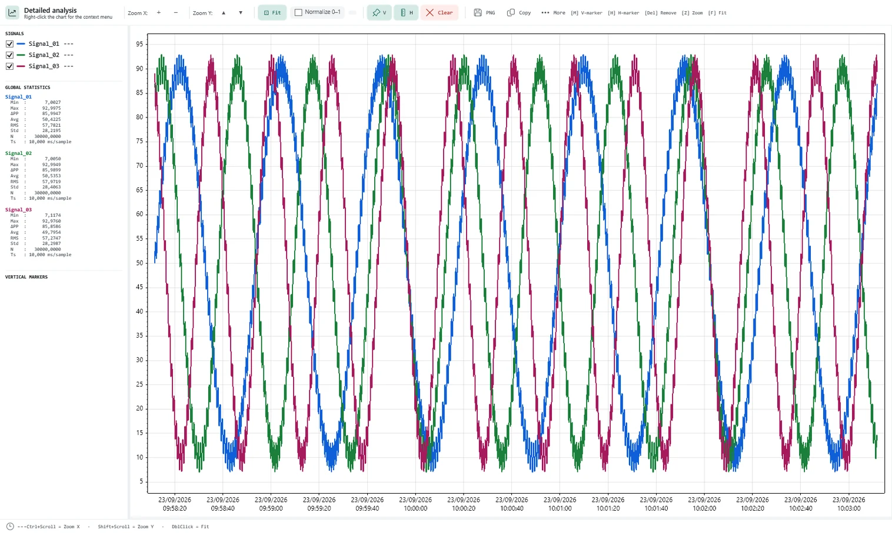

PlcTraceViewer — acquisizione, registrazione e analisi di segnali da PLC Siemens
PlcTraceViewer — Siemens PLC signal acquisition, recording and analysis
Applicazione Windows per collegarsi a un controllore Siemens, campionarne i segnali in continuo,
registrarli su file e analizzarli — sia a registrazione conclusa sia mentre i dati stanno arrivando.
A Windows application that connects to a Siemens controller, samples its signals continuously,
records them to file and analyses them — both after the recording and while the data is arriving.
Versione
Version
2.0
Piattaforma
Platform
Windows 10 / 11 · 64 bit
Controllori
Controllers
S7-300 / 400 / 1200 / 1500
Documento
Document
DS-PTV-21
1 · Panoramica
1 · Overview
PlcTraceViewer si collega direttamente a un controllore Siemens sulla rete di impianto e ne
legge i segnali in modo ciclico. I campioni sono mostrati in tempo reale e, su comando,
scritti su file. Il file prodotto è pensato per essere analizzato a distanza di tempo: ogni
campione porta l'istante reale della lettura e i valori non disponibili sono conservati come
tali, distinguibili da una misura valida.
PlcTraceViewer connects directly to a Siemens controller on the plant network and reads its
signals cyclically. Samples are shown in real time and, on command, written to file. The
resulting file is meant to be analysed long afterwards: every sample carries the real instant
of the read, and unavailable values are kept as such, distinguishable from a valid measurement.
Casi d'uso previsti
Intended use
Messa in servizio — verifica di tempi ciclo, sequenze, risposte di attuatori.
Ricerca guasti intermittenti — registrazioni lunghe non presidiate, da rileggere dopo l'evento.
Collaudo e caratterizzazione — confronto fra segnali, misure di ritardo, analisi in frequenza.
Documentazione — esportazione dei tratti significativi verso altri strumenti.
Intermittent fault-finding — long unattended recordings, to be read back after the event.
Testing and characterisation — comparing signals, measuring delays, frequency analysis.
Documentation — exporting the significant spans to other tools.
2 · Connessioni supportate
2 · Supported connections
Tre vie di accesso, selezionabili e mantenute distinte. La scelta determina quali blocchi sono
leggibili e in quale forma.
Three access routes, selectable and kept distinct. The choice determines which blocks are
readable and in what form.
Via
CPU
Indirizzamento
Blocchi ottimizzati
Prerequisiti sulla CPU
Route
CPU
Addressing
Optimised blocks
Prerequisites on the CPU
PUT/GET
S7-300 / 400 / 1200 / 1500
assoluto
non leggibili
accesso PUT/GET consentito
PUT/GET
S7-300 / 400 / 1200 / 1500
absolute
not readable
PUT/GET access allowed
OPC UA
S7-1200 / 1500
simbolico
leggibili
server OPC UA attivo e licenziato
OPC UA
S7-1200 / 1500
symbolic
readable
OPC UA server enabled and licensed
S7comm-Plus
S7-1500 ≥ V2.9 S7-1200 ≥ V4.3
simbolico
leggibili
comunicazione PG/PC e HMI sicura abilitata
S7comm-Plus
S7-1500 ≥ V2.9 S7-1200 ≥ V4.3
symbolic
readable
secure PG/PC and HMI communication enabled
Trasporto
Transport
ISO-on-TCP, porta 102 (configurabile), port 102 (configurable)
Parametri
Parameters
famiglia CPU, rack, slot, porta, timeout di connessione e di operazione, numero di tentativi
CPU family, rack, slot, port, connect and operation timeouts, number of attempts
Aree leggibili
Readable areas
blocchi dati, merker, ingressi, uscite
data blocks, memory, inputs, outputs
Tipi supportati
Supported types
BOOL, BYTE, SINT, USINT, WORD, INT, UINT, DWORD, DINT, UDINT, REAL, LREAL, LINT, ULINT, LWORD, TIME
Diagnostica
Diagnostics
l'errore identifica il livello che ha rifiutato (TCP, ISO/COTP, setup S7); test di raggiungibilità e test approfondito di connessione separati
the error identifies the layer that refused (TCP, ISO/COTP, S7 setup); separate reachability test and deep connection test
Blocchi ad accesso ottimizzato.Optimised-access blocks. Non espongono indirizzi assoluti e non sono quindi raggiungibili via PUT/GET. Il
programma li riconosce e li segnala esplicitamente, anziché restituire valori nulli. Per
leggerli è necessaria una delle due vie simboliche. They expose no absolute addresses and are therefore not reachable over PUT/GET.
The program recognises them and says so explicitly, rather than returning null values.
Reading them requires one of the two symbolic routes.
3 · Nomi simbolici e struttura dei dati
3 · Symbolic names and data structure
I canali possono essere nominati a partire da più sorgenti, usate singolarmente o in
combinazione. Quando una sorgente è incompleta il programma lo dichiara, invece di dedurre
strutture non verificate.
Channels can be named from several sources, used alone or together. When a source is
incomplete the program says so, instead of inferring unverified structures.
Sorgente
Formati
Cosa fornisce
Source
Formats
What it provides
Progetto TIA
.ap16 … .ap21
nome e numero dei blocchi, struttura e offset dichiarati dal progetto
TIA project
.ap16 … .ap21
block names and numbers, structure and offsets as declared by the project
Sorgenti di blocco
.db .scl .udt
variabili dei DB, con struct annidate, UDT e array multidimensionali
Block sources
.db .scl .udt
DB variables, with nested structs, UDTs and multi-dimensional arrays
Tabelle tag
.xlsx .csv
nome, tipo e commento per merker, ingressi e uscite
Tag tables
.xlsx .csv
name, type and comment for memory, inputs and outputs
Direttamente dalla CPU
—
symbol table su S7-300/400; elenco e struttura dei blocchi dati su S7-1200/1500 via OPC UA o S7comm-Plus, senza il progetto
Straight from the CPU
—
symbol table on S7-300/400; data-block list and structure on S7-1200/1500 over OPC UA or S7comm-Plus, without the project
Gli offset assoluti dei blocchi non ottimizzati sono determinati secondo le regole di
allineamento S7. Dove una dichiarazione di tipo non è disponibile, i membri interessati non
vengono indirizzati: un offset non verificabile produrrebbe letture plausibili ma sbagliate.
Absolute offsets of non-optimised blocks are derived from the S7 alignment rules. Where a type
declaration is not available, the members concerned are not addressed at all: an offset that
cannot be verified would produce plausible but wrong readings.
4 · Architettura di acquisizione
4 · Acquisition architecture
L'acquisizione non condivide il processo con l'interfaccia. Legge il controllore un
processo dedicato, avviato dall'applicazione e sorvegliato da essa, che non disegna
nulla: possiede le connessioni, il proprio orologio e la propria priorità.
Acquisition does not share the process with the user interface. The controller is read by a
dedicated process, started and supervised by the application, which draws nothing: it
owns the connections, its own clock and its own priority.
Marcatura temporale
Time stamping
eseguita nel processo di acquisizione, nell'istante in cui la risposta del controllore è disponibile; il ritardo con cui la finestra riceve o disegna il campione non modifica il tempo registrato
performed in the acquisition process, at the instant the controller's answer is available; any delay in the window receiving or drawing the sample does not change the recorded time
Isolamento
Isolation
l'interfaccia (scorrimento elenchi, grafici, esportazioni, gestione della memoria) non può ritardare una lettura né spostare un istante di campionamento
the user interface (list scrolling, charts, exports, memory management) cannot delay a read nor move a sampling instant
Continuità
Continuity
se il processo di acquisizione non può essere avviato o termina, la lettura prosegue dentro l'applicazione e l'evento è riportato nel registro
if the acquisition process cannot start or terminates, reading continues inside the application and the event is written to the log
Verifica in fabbrica
Bench verification
100 canali a 1 ms contro controllori simulati, con l'interfaccia volutamente sotto carico: periodo tipico 0,999 ms, 99° percentile 1,06 ms, massimo 1,30 ms
100 channels at 1 ms against simulated controllers, with the interface deliberately under load: typical period 0.999 ms, 99th percentile 1.06 ms, maximum 1.30 ms
Cosa significa e cosa non significa.What this does and does not mean. I valori sopra descrivono il comportamento del programma, misurato in
laboratorio. Sull'impianto il tempo di risposta del controllore resta il fattore determinante
e non è sotto il controllo dell'applicazione: vedere §5. The figures above describe the behaviour of the program, measured on the
bench. On a plant the controller's response time remains the determining factor and is not
under the application's control: see §5.
misurato e mostrato per ogni canale, distinto da quello impostato
measured and shown for every channel, kept distinct from the one set
Verifica preventiva
Pre-flight check
eseguita prima dell'apertura del primo file di registrazione
carried out before the first recording file is opened
Carico sul controllore
Load on the controller
numero di richieste contemporanee limitato per costruzione; percentuale di occupazione del collegamento riportata all'utente
the number of simultaneous requests is limited by design; the share of the connection in use is reported to the user
Campionamento nel PLC
Sampling inside the PLC
opzionale, tramite blocchi generati dal programma e importati in TIA; il PLC campiona al ritmo del proprio OB e i dati sono prelevati in blocco
optional, through blocks generated by the program and imported into TIA; the PLC samples at the pace of its own OB and the data is collected in batches
L'intervallo sostenibile non è una specifica del prodotto.The sustainable interval is not a product specification. Dipende dal modello di CPU, dal numero e dal tipo di canali selezionati e dal
carico della rete. Il programma lo misura sull'impianto e, quando l'intervallo richiesto non
è sostenibile, lo segnala prima dell'avvio della registrazione proponendo il valore
compatibile. It depends on the CPU model, on the number and type of channels selected and on
network load. The program measures it on site and, when the requested interval cannot be
sustained, says so before the recording starts and offers the compatible value.
L'intervallo effettivo è mostrato per ogni canale (colonne PERIOD e RATE), distinto da quello impostato.The effective interval is shown for every channel (PERIOD and RATE columns), kept distinct from the one set.
Buffer di campionamento nel PLC (opzionale)
In-PLC sampling buffer (optional)
Per i casi in cui la frequenza richiesta non è ottenibile sulla rete, il programma genera i
blocchi da importare nel progetto TIA. Il buffer accetta segnali di tipo misto (BOOL, BYTE,
INT, DINT, WORD, DWORD, REAL, LREAL); numero di segnali per tipo e profondità sono
configurabili, e l'occupazione di memoria risultante nel PLC è mostrata prima della generazione.
For cases where the required rate cannot be achieved over the network, the program generates
the blocks to import into the TIA project. The buffer accepts mixed types (BOOL, BYTE, INT,
DINT, WORD, DWORD, REAL, LREAL); the number of signals per type and the depth are configurable,
and the resulting memory use in the PLC is shown before generating.

6 · Registrazione e gestione dei file
6 · Recording and file handling
Formato
Format
binario proprietario, estensione .drug
proprietary binary, extension .drug
Compressione
Compression
automatica sui file chiusi, estensione .drug.gz
automatic on closed files, extension .drug.gz
Organizzazione
Organisation
una cartella per giorno; suddivisione dei file per dimensione configurabile
one folder per day; file splitting by size, configurable
Marcatura temporale
Time stamping
per campione, riferita all'istante della risposta del controllore
per sample, referred to the instant of the controller's answer
Valori non disponibili
Unavailable values
registrati come assenza di valore, non come zero
recorded as absence of value, not as zero
Sorveglianza
Supervision
controllo continuo dell'avanzamento della scrittura, con segnalazione all'utente
continuous check that writing is progressing, reported to the user
Gestione spazio
Space management
conservazione a tempo o a dimensione; i file più vecchi sono compressi prima di essere rimossi; la registrazione in corso non è mai coinvolta
retention by age or by size; the oldest files are compressed before removal; the recording in progress is never involved
Formati letti
Formats read
.drug · .drug.gz · .csv · .txt
Garanzie sul dato registrato
Guarantees on recorded data
Tempo reale di lettura — ogni campione è marcato con l'istante in cui il valore è stato effettivamente ottenuto, non con quello pianificato.
Nessuna sostituzione — un valore non letto non viene rimpiazzato da un valore di comodo, in nessun punto della catena fino al disco.
Verifica preventiva — la sostenibilità dell'intervallo è accertata prima dell'apertura del primo file.
Continuità sorvegliata — l'interruzione della scrittura viene rilevata e segnalata durante la registrazione.
Real read time — every sample is stamped with the instant the value was actually obtained, not the planned one.
No substitution — a value that was not read is never replaced by a convenient one, at any point of the chain down to the disk.
Pre-flight check — the interval's sustainability is established before the first file is opened.
Supervised continuity — an interruption of writing is detected and reported during the recording.
7 · Visualizzazione e analisi
7 · Display and analysis
Gli strumenti di analisi operano indifferentemente su una registrazione salvata o su segnali in
acquisizione. Ogni canale può essere aperto in una finestra dedicata, e altri canali possono
esservi trascinati per la sovrapposizione.
The analysis tools work equally on a saved recording and on signals being acquired. Each channel
can be opened in its own window, and other channels dragged in to overlay them.
Grafici
Charts
multi-segnale su asse temporale comune, zoom e pan, autoscala che preserva le discontinuità
multi-signal on a common time axis, zoom and pan, autoscale that preserves discontinuities
Marker
Markers
verticali e orizzontali, con differenza di tempo, differenza di valore e frequenza corrispondente
vertical and horizontal, with time difference, value difference and the matching frequency
Statistiche
Statistics
sul tratto selezionato e sull'intero segnale
over the selected span and over the whole signal
Finestre
Windows
staccabili e indipendenti, per uso su più monitor
detachable and independent, for use across several monitors
Esportazione
Export
dati in .csv, grafico in .png, configurazione dei canali in .sigcfg
data as .csv, chart as .png, channel configuration as .sigcfg
Colonne di stato
Status columns
periodo e frequenza effettivi per canale, qualità del valore corrente
effective period and rate per channel, quality of the current value

8 · Motore dei segnali calcolati
8 · Computed-signal engine
Un canale può essere definito da un'espressione anziché da un indirizzo. Le espressioni sono
componibili e possono referenziare altri canali, inclusi altri canali calcolati.
A channel can be defined by an expression instead of an address. Expressions compose freely and
can reference other channels, including other computed channels.
Funzioni
Functions
94, organizzate in dieci famiglie
94, organised in ten families
Famiglie
Families
matematica · trigonometria · logica · derivate e integrali · filtri · statistiche a finestra · statistiche globali · fronti e temporizzazioni · tempo e frequenza · compatibilità
maths · trigonometry · logic · derivatives and integrals · filters · windowed statistics · global statistics · edges and timing · time and frequency · compatibility
Un servizio Windows pubblica i valori correnti su una pagina consultabile dai browser della rete
locale. La pagina invia comandi all'applicazione: la registrazione avviata dalla dashboard è la
stessa registrazione dell'applicazione, non una seconda.
A Windows service publishes the current values on a page any browser on the local network can
open. The page sends commands to the application: a recording started from the dashboard is the
application's own recording, not a second one.
Servizio
Service
servizio Windows ad avvio automatico, installato insieme al programma
Windows service with automatic start, installed with the program
Accesso
Access
HTTP sulla porta 8085 (configurabile)
HTTP on port 8085 (configurable)
Funzioni
Functions
valori in tempo reale, andamento recente, selezione dei segnali, avvio e arresto della registrazione, stato del disco
live values, recent trend, signal selection, start and stop of the recording, disk state
Autenticazione
Authentication
nessuna: destinata a reti di impianto attendibili
none: intended for trusted plant networks
Disponibilità
Availability
funzione PRO
PRO feature
Sicurezza.Security. L'interfaccia non prevede autenticazione: chiunque raggiunga la porta può vedere i
valori e comandare la registrazione. Va usata su rete di impianto attendibile e non esposta
direttamente a internet. The interface has no authentication: anyone who reaches the port can see the
values and command the recording. Use it on a trusted plant network and do not expose it
directly to the internet.
10 · Licenza ed edizioni
10 · Licensing and editions
Edizione base
Base edition
utilizzabile senza attivazione
usable without activation
Edizione PRO
PRO edition
attivata da chiave; include la dashboard web e le funzioni avanzate
activated by key; includes the web dashboard and the advanced features
Attivazione
Activation
completamente offline: nessuna connessione a internet richiesta, né all'attivazione né successivamente
entirely offline: no internet connection required, at activation or afterwards
Vincolo
Binding
chiave legata alla singola macchina, firmata crittograficamente
key bound to the individual machine, cryptographically signed
Durata
Term
a termine o senza scadenza, secondo la chiave emessa
time-limited or perpetual, according to the key issued
Recupero
Recovery
la chiave è riemettibile in caso di smarrimento
the key can be reissued if lost
11 · Requisiti e installazione
11 · Requirements and installation
Sistema operativo
Operating system
Windows 10 o 11, 64 bit
Windows 10 or 11, 64-bit
Runtime
Runtime
incluso nell'installer; nessun componente da installare separatamente
included in the installer; nothing to install separately
Rete
Network
accesso IP al controllore; porta 102 raggiungibile
IP access to the controller; port 102 reachable
Spazio su disco
Disk space
dipendente dalla durata delle registrazioni; la gestione automatica dello spazio è configurabile
depends on how long the recordings run; automatic space management is configurable
Installazione
Installation
procedura guidata; il servizio della dashboard viene registrato e avviato automaticamente
guided wizard; the dashboard service is registered and started automatically
Aggiornamento
Update
installazione sopra la versione precedente, che va chiusa prima di procedere
install over the previous version, which must be closed first
12 · Limiti dichiarati
12 · Declared limitations
Sola lettura. Il programma non scrive nel controllore: non forza variabili, non modifica il programma utente e non altera lo stato della CPU.
Frequenza non garantita a priori. L'intervallo sostenibile dipende dall'installazione e viene determinato in campo, non dichiarato in specifica.
Blocchi ottimizzati. Non indirizzabili in modo assoluto; richiedono OPC UA o S7comm-Plus, con i relativi prerequisiti sulla CPU.
Non sostituisce l'ambiente di programmazione. Non programma, non compila e non esegue diagnostica hardware.
Non è un sistema di storicizzazione di processo. È uno strumento di messa in servizio e di analisi guasti.
Nessun accesso remoto oltre la rete locale. Non sono previsti servizi cloud né sincronizzazione esterna.
Interfaccia web senza autenticazione. Da impiegare esclusivamente su rete di impianto attendibile.
Read-only. The program does not write to the controller: no forcing of variables, no change to the user program, no change of CPU state.
Rate not guaranteed in advance. The sustainable interval depends on the installation and is determined on site, not stated in a specification.
Optimised blocks. Not addressable absolutely; they require OPC UA or S7comm-Plus, with the matching prerequisites on the CPU.
Not a replacement for the engineering environment. No programming, no compiling, no hardware diagnostics.
Not a process historian. This is a commissioning and fault-analysis tool.
No remote access beyond the local network. No cloud services and no external synchronisation.
Web interface without authentication. To be used exclusively on a trusted plant network.